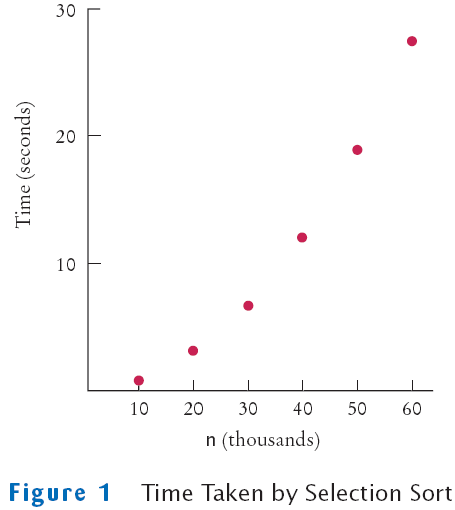
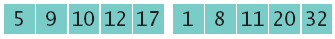
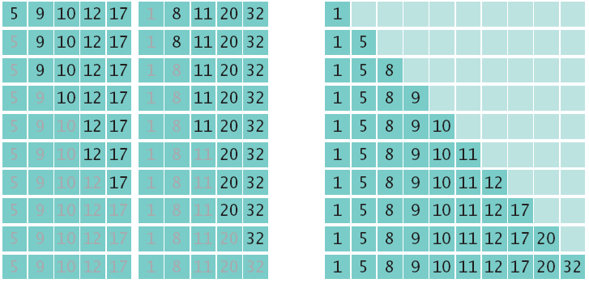
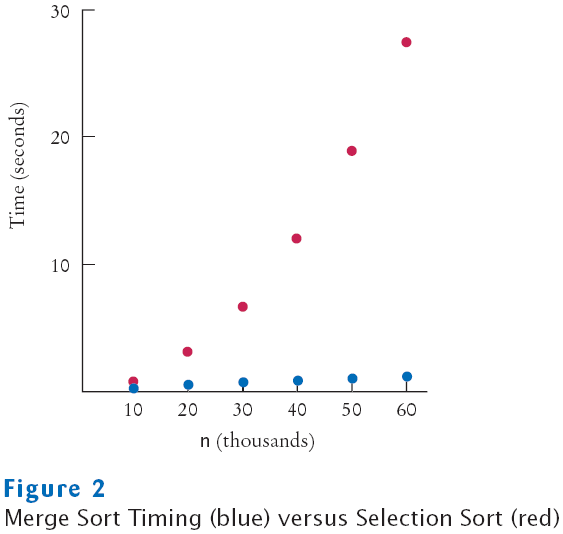
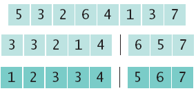
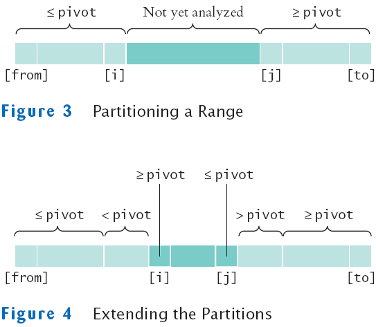
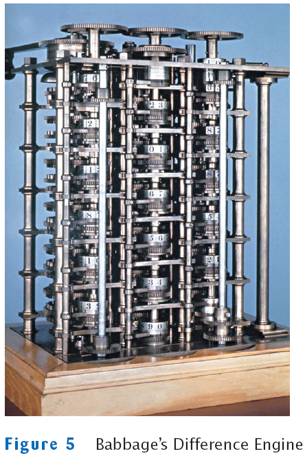
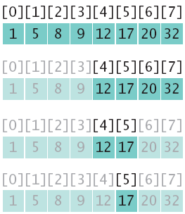

Chapter 19
Sorting and Searching
Chapter Goals
- To study several sorting and searching algorithms
- To appreciate that algorithms for the same task can differ widely
in performance
- To understand the big-Oh notation
- To learn how to estimate and compare the performance of algorithms
- To learn how to measure the running time of a program
Selection Sort
- Sorts an array by repeatedly finding the smallest element of
the unsorted tail region and moving it to the front
- Slow when run on large data sets
- Example: sorting an array of integers
Sorting an Array of Integers
- Find the smallest and swap it with the first element
- Find the next smallest. It is already in the correct place
- Find the next smallest and swap it with first element of unsorted
portion
- Repeat
- When the unsorted portion is of length 1, we are done
File SelectionSorter.java
File SelectionSortTester.java
File ArrayUtil.java
Output
65 46 14 52 38 2 96 39 14 33 13 4 24 99 89 77 73 87 36 81
2 4 13 14 14 24 33 36 38 39 46 52 65 73 77 81 87 89 96 99
Self Check
- Why do we need the temp variable in the swap
method? What would happen if
you simply assigned a[i] to a[j] and a[j]
to a[i]?
- What steps does the selection sort algorithm go through to sort
the sequence
6 5 4 3 2 1?
Answers
- Dropping the temp variable would not work. Then a[i]
and a[j] would end up
being the same value.
Profiling the Selection Sort Algorithm
- We want to measure the time the algorithm takes to execute
- Exclude the time the program takes to load
- Exclude output time
- Create a StopWatch class to measure execution time of
an algorithm
- It can start, stop and give elapsed time
- Use System.currentTimeMillis method
- Create a StopWatch object
- Start the stopwatch just before the sort
- Stop the stopwatch just after the sort
- Read the elapsed time
File StopWatch.java
File SelectionSortTimer
Output
Enter array size: 100000
Elapsed time: 27880 milliseconds
Selection Sort on Various Size Arrays*
| n |
Milliseconds |
| 10,000 |
772 |
| 20,000 |
3,051 |
| 30,000 |
6,846 |
| 40,000 |
12,188 |
| 50,000 |
19,015 |
| 60,000 |
27,359 |
* Obtained with a Pentium processor, 1.2 GHz, Java 5.0,
Linux
Selection Sort on Various Size Arrays

Selection Sort on Various Size Arrays
- Doubling the size of the array more than
doubles the time needed to sort it
Self Check
- Approximately how many seconds would it take to sort a
data set of 80,000 values?
- Look at the graph in Figure 1. What mathematical shape does it
resemble?
Answers
- Four times as long as 40,000 values, or about 50
seconds.
- A parabola.
Analyzing the Performance of the Selection Sort Algorithm
- In an array of size n, count how many times an array
element is visited
- To find the smallest, visit n elements + 2 visits for
the swap
- To find the next smallest, visit (n - 1) elements + 2
visits for the swap
- The last term is 2 elements visited to find the smallest + 2
visits for the swap
Analyzing the Performance of the Selection Sort Algorithm
- The number of visits:
- n + 2 + (n - 1) + 2 + (n - 2) + 2 + . .
.+ 2 + 2
- This can be simplified to n2 /2 +
5n/2 - 3
- 5n/2 - 3 is small compared to n2 /2
– so let's ignore it
- Also ignore the 1/2 – it cancels out when comparing ratios
Analyzing the Performance of the Selection Sort Algorithm
- The number of visits is of the order n2
- Using big-Oh notation: The number of visits is O(n2)
- Multiplying the number of elements in an array by 2
multiplies the processing time by 4
- Big-Oh notation "f(n) = O(g(n))"
expresses that f grows no faster than g
- To convert to big-Oh notation:
locate fastest-growing term, and ignore constant coefficient
Self Check
- If you increase the size of a data set tenfold, how
much longer does it take to
sort it with the selection sort algorithm?
- How large does n need to be so that n2/2
is bigger than 5n2/2 - 3?
Answers
- It takes about 100 times longer.
- If n is 4, then n2/2 is 8 and 5n2/2
- 3 is 7.
Insertion Sort
- Assume initial sequence a[0] . . . a[k] is sorted (k
= 0):
- Add a[1]; element needs to be inserted before 11
- Add a[2]
- Add a[3]
- Finally, add a[4]
File InsertionSorter.java
Merge Sort
- Sorts an array by
- Cutting the array in half
- Recursively sorting each half
- Merging the sorted halves
- Dramatically faster than the selection sort
Merge Sort Example
- Divide an array in half and sort each half

- Merge the two sorted arrays into a single sorted array 
Merge Sort
public void sort()
{
if (a.length <= 1) return;
int[] first = new int[a.length / 2];
int[] second = new int[a.length - first.length];
System.arraycopy(a, 0, first, 0, first.length);
System.arraycopy(a, first.length, second, 0, second.length);
MergeSorter firstSorter = new MergeSorter(first);
MergeSorter secondSorter = new MergeSorter(second);
firstSorter.sort();
secondSorter.sort();
merge(first, second);
}
File MergeSorter.java
File MergeSortTester.java
Output
8 81 48 53 46 70 98 42 27 76 33 24 2 76 62 89 90 5 13 21
2 5 8 13 21 24 27 33 42 46 48 53 62 70 76 76 81 89 90 98
Self Check
- Why does only one of the two arraycopy calls
at the end of the merge method do any work?
- Manually run the merge sort algorithm on the array 8 7 6 5 4 3 2
1.
Answers
- When the preceding while loop ends, the loop
condition must be false, that is,
iFirst >= first.length or iSecond >=
second.length (De Morgan's Law).
Then first.length - iFirst <= 0 or iSecond.length -
iSecond <= 0.
- First sort 8 7 6 5.
Recursively, first sort 8 7.
Recursively, first sort 8. It's sorted.
Sort 7. It's sorted.
Merge them: 7 8.
Do the same with 6 5 to get 5 6.
Merge them to 5 6 7 8.
Do the same with 4 3 2 1: Sort 4 3 by sorting 4 and 3 and merging them
to 3 4.
Sort 2 1 by sorting 2 and 1 and merging them to 1 2.
Merge 3 4 and 1 2 to 1 2 3 4.
Finally, merge 5 6 7 8 and 1 2 3 4 to 1 2 3 4 5 6 7 8.
Analyzing the Merge Sort Algorithm
| n |
Merge Sort (milliseconds) |
Selection Sort (milliseconds) |
| 10,000 |
31 |
772 |
| 20,000 |
47 |
3,051 |
| 30,000 |
62 |
6,846 |
| 40,000 |
80 |
12,188 |
| 50,000 |
97 |
19,015 |
| 60,000 |
113 |
27,359 |
Merge Sort Timing vs. Selection Sort

Analyzing the Merge Sort Algorithm
- In an array of size n, count how many times an array
element is visited
- Assume n is a power of 2: n = 2m
- Calculate the number of visits to create the two sub-arrays and
then merge the two sorted arrays
- 3 visits to merge each element or 3n visits
- 2n visits to create the two sub-arrays
- total of 5n visits
Analyzing the Merge Sort Algorithm
- Let T(n) denote the number of visits to sort an array of n
elements then
- T(n) = T(n/2) + T(n/2) + 5n or
- T(n) = 2T(n/2) + 5n
- The visits for an array of size n/2 is:
T(n/2) = 2T(n/4) + 5n/2
- So T(n) = 2 × 2T(n/4) +5n + 5n
- The visits for an array of size n/4 is:
T(n/4) = 2T(n/8) + 5n/4
- So T(n) = 2 × 2 × 2T(n/8) + 5n
+ 5n + 5n
Analyzing Merge Sort Algorithm
- Repeating the process k times: T(n)
= 2kT(n/2k) +5nk
- since n = 2m, when k = m: T(n)
= 2mT(n/2m) +5nm
- T(n) = nT(1) +5nm
- T(n) = n + 5nlog2(n)
Analyzing Merge Sort Algorithm
- To establish growth order
- Drop the lower-order term n
- Drop the constant factor 5
- Drop the base of the logarithm since
all logarithms are related by a constant factor
- We are left with n log(n)
- Using big-Oh notation: number of visits is O(nlog(n))
Merge Sort Vs Selection Sort
- Selection sort is an O(n2) algorithm
- Merge sort is an O(nlog(n)) algorithm
- The nlog(n) function grows much more slowly than n2
Sorting in a Java Program
Self Check
- Given the timing data for the merge sort algorithm in
the table at the beginning
of this section, how long would it take to sort an array of 100,000
values?
- Suppose you have an array double[] values in a Java
program. How would you sort it?
Answers
- Approximately 100,000 × log(100,000) / 50,000
× log(50,000) = 2 × 5 / 4.7 = 2.13
times the time required for 50,000 values. That's 2.13 × 97
milliseconds or
approximately 207 milliseconds.
- By calling Arrays.sort(values).
The Quicksort Algorithm
- Divide and conquer
- Partition the range
- Sort each partition

The Quicksort Algorithm
public void sort(int from, int to)
{
if (from >= to) return;
int p = partition(from, to);
sort(from, p);
sort(p + 1, to);
}
The Quicksort Algorithm

The Quicksort Algorithm
private int partition(int from, int to)
{
int pivot = a[from];
int i = from - 1;
int j = to + 1;
while (i < j)
{
i++; while (a[i] < pivot) i++;
j--; while (a[j] > pivot) j--;
if (i < j) swap(i, j);
}
return j;
}
The First Programmer

Searching
- Linear search: also called sequential search
- Examines all values in an array until it finds a match or reaches
the end
- Number of visits for a linear search of an array of n
elements:
- The average search visits n/2 elements
- The maximum visits is n
- A linear search locates a value in an array in O(n) steps
File LinearSearcher.java
File LinearSearchTester.java
Output
46 99 45 57 64 95 81 69 11 97 6 85 61 88 29 65 83 88 45 88
Enter number to search for, -1 to quit: 11
Found in position 8
Self Check
- Suppose you need to look through 1,000,000 records to
find a telephone number.
How many records do you expect to search before finding the number?
- Why can't you use a "for each" loop for (int element : a)
in the search method?
Answers
- On average, you'd make 500,000 comparisons.
- The search method returns the index at which the match occurs,
not the data stored at that location.
Binary Search
- Locates a value in a sorted array by
- Determining whether the value occurs in the first or second
half
- Then repeating the search in one of the halves
Binary Search
- To search 15:

- 15 ≠ 17: we don't have a match
File BinarySearcher.java
Binary Search
- Count the number of visits to search an sorted array of size n
- We visit one element (the middle element) then search either
the left or right subarray
- Thus: T(n) = T(n/2) + 1
- If n is n/2, then T(n/2)
= T(n/4) + 1
- Substituting into the original equation:
T(n) = T(n/4) + 2
- This generalizes to: T(n) = T(n/2k)
+ k
Binary Search
- Assume n is a power of 2, n = 2m
where m = log2(n)
- Then: T(n) = 1 + log2(n)
- Binary search is an O(log(n)) algorithm
Searching a Sorted Array in a Program
- The Arrays class contains a static binarySearch
method
- The method returns either
- The index of the element, if element is found
- Or -k - 1 where k is the position before which
the element should be inserted
int[] a = { 1, 4, 9 };
int v = 7;
int pos = Arrays.binarySearch(a, v);
// Returns -3; v should be inserted before position 2
Self Check
- Suppose you need to look through a sorted array with
1,000,000 elements to
find a value. Using the binary search algorithm, how many records do
you
expect to search before finding the value?
- Why is it useful that the Arrays.binarySearch method
indicates the position
where a missing element should be inserted?
- Why does Arrays.binarySearch return -k - 1 and
not -k to indicate that a value
is not present and should be inserted before position k?
Answers
- You would search about 20. (The binary log of 1,024 is
10.)
- Then you know where to insert it so that the array stays sorted,
and you can keep using binary search.
- Otherwise, you would not know whether a value is present when the
method returns 0.
Sorting Real Data
Sorting Real Data
CompareTo Method
- The implementation must define a total ordering relationship
- Antisymmetric
If a.compareTo(b) = 0, then b.compareTo(a) = 0
- Reflexive
a.compareTo(a) = 0
- Transitive
If a.compareTo(b) = 0 and b.compareTo(c) = 0, then a.compareTo(c)
= 0
Sorting Real Data
Self Check
- Why can't the Arrays.sort method sort an
array of Rectangle objects?
- What steps would you need to take to sort an array of BankAccount
objects by increasing balance?
Answers
- The Rectangle class does not implement the Comparable
interface.
- The BankAccount class needs to implement the Comparable
interface. Its
compareTo method must compare the bank balances.